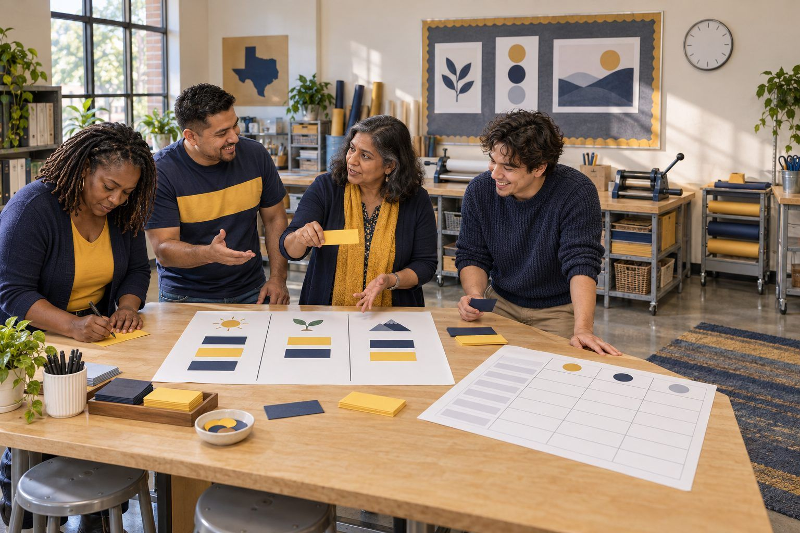

Bồi dưỡng chuyên môn · Chuyên viên hỗ trợ, Lãnh đạo, Thủ thư · 75 phút
Làm mới thực đơn bồi dưỡng chuyên môn
Chuyên viên hỗ trợ giảng dạy mổ xẻ một ngày bồi dưỡng chuyên môn (PD) về AI kiểu "một cỡ cho tất cả" và xây dựng lại thành một thực đơn lựa chọn, dựa trên đánh giá nhu cầu thực tế, các nguyên tắc học tập của người lớn và những chiến lược giảng dạy đã được chứng minh hiệu quả.
Nhiều trường đã từng trải qua "ngày PD về AI": một bài phát biểu chính về tương lai, phần giới thiệu tám công cụ, mọi người tạo tài khoản, và thứ Hai tuần sau chẳng có gì thay đổi. Trong buổi thiết kế này, các chuyên viên hỗ trợ giảng dạy phân tích chương trình ban đầu của một học khu hư cấu cùng những nhận xét giáo viên để lại sau đó, phân loại một bản nháp đánh giá nhu cầu thành những câu hỏi nên giữ, nên viết lại hoặc nên loại bỏ, rồi xây dựng lại ngày bồi dưỡng thành một thực đơn. Mỗi lựa chọn trong thực đơn phải nêu rõ dành cho ai, nguyên tắc học tập của người lớn mà nó tôn trọng, chiến lược giảng dạy dựa trên nghiên cứu mà nó phục vụ, và bằng chứng mà giáo viên sẽ mang về. Thực đơn có các lộ trình dành cho người hoài nghi, về bảo mật, và cho việc quyết định không sử dụng AI.
Trong bộ tài liệu này
- Phiếu A: Ngày AI ở Juniper Flats (bài đọc)
- Phiếu B: Phân loại câu hỏi đánh giá nhu cầu (phân loại thẻ)
- Phiếu C: Công cụ xây dựng thực đơn (sơ đồ tổ chức)
- Đáp án cho người điều phối (trang cuối)
Chỉ báo ELE của TCEA
- C4.1 Tôi biết cách thiết kế và thực hiện các buổi bồi dưỡng chuyên môn hiệu quả.
- C4.2 Tôi có thể xác định và đáp ứng nhu cầu học tập riêng của từng giáo viên.
- C4.3 Tôi nhận thức được các nguyên tắc học tập của người lớn và cách áp dụng chúng.
- AI1.2 Tôi có thể giải thích các khái niệm AI một cách đơn giản cho nhiều đối tượng liên quan khác nhau.
Hướng dẫn đầy đủ cho người điều phối: mglearn.github.io/eles/vi/activities/pd-menu-makeover.html
Phiếu A cho Làm mới thực đơn bồi dưỡng chuyên môn
Ngày AI ở Juniper Flats
Chương trình PD ban đầu của một học khu hư cấu và những nhận xét giáo viên viết sau đó. Các nhận xét có đánh dấu sao dùng cho phần Kiểm tra với chân dung giáo viên.
1Juniper Flats ISD · Ngày PD "AI cho mọi người" · Toàn bộ nhân viên K–12, hội trường trường trung học. 8:00 Chào mừng và bài phát biểu chính: "Tương lai đã ở đây." · 9:15 Giới thiệu: tám công cụ AI trong 75 phút. · 10:30 Mọi người tạo tài khoản trên một chatbot và thử ba câu lệnh trên màn hình. · 11:30 Ăn trưa. · 12:30 Video tuân thủ về quy định sử dụng. · 1:30 Các tổ khối "động não các cách dùng AI." · 2:45 Khảo sát cuối buổi: "Chấm điểm hôm nay từ 1–5."
2Sáu nguyên tắc học tập của người lớn dùng để chẩn đoán. (1) Người lớn cần biết vì sao trước khi biết làm gì. (2) Người lớn mang theo kinh nghiệm cần được tận dụng, không bị bỏ qua. (3) Người lớn học tốt nhất khi xoay quanh những vấn đề thật trong công việc của mình. (4) Người lớn muốn có quyền lựa chọn và một phần quyền chủ động trong việc học. (5) Người lớn sẵn sàng học những gì liên quan đến vai trò hiện tại của mình. (6) Người lớn cần được thực hành có phản hồi, không chỉ được tiếp xúc.
3★ Giáo viên lớp 2: "Bảy trong số tám công cụ ghi là dành cho người từ 13 tuổi trở lên. Tôi dạy trẻ bảy tuổi. Tôi mất cả buổi sáng cho những thứ không thể dùng."
4★ Giáo viên hóa học trung học phổ thông: "Tôi không phản đối AI, tôi phản đối việc lãng phí một ngày. Tôi muốn biết liệu nó có giúp học sinh viết luận điểm kèm bằng chứng trong báo cáo thí nghiệm không. Không ai hỏi tôi điều đó."
5★ Giáo viên Ngữ văn Anh (ELA) trung học cơ sở, 22 năm trong nghề: "Tôi thực sự lo ngại việc học sinh giao phó việc suy nghĩ cho máy, và hôm nay giống như một buổi chào hàng. Tôi đã không nói gì vì có vẻ câu trả lời đã được định sẵn là 'có'."
6Giáo viên giáo dục đặc biệt: "Tôi rất muốn có một phiên về chuyển văn bản thành giọng nói và các công cụ hỗ trợ đọc. Chủ đề đó chỉ được nhắc đến trong ba mươi giây."
7Thủ thư: "Chúng tôi tạo tài khoản bằng email của học khu, và không ai giải thích công cụ làm gì với những gì chúng tôi gõ vào. Hai người ở bàn tôi đã dán bài viết của học sinh vào để thử."
8Giáo viên năm thứ hai: "Thật lòng, tôi chỉ muốn xem ai đó dạy một bài có dùng nó, rồi tự mình thử với có người hỗ trợ bên cạnh."
9Ghi chú khảo sát cuối buổi từ ban tổ chức: "Điểm trung bình 3.1. Giáo viên muốn có thêm thời gian khám phá." (Hãy tự hỏi kết luận đó có khớp với các nhận xét ở trên không.)
Phiếu B cho Làm mới thực đơn bồi dưỡng chuyên môn
Phân loại câu hỏi đánh giá nhu cầu
Phân loại từng câu hỏi nháp: Giữ lại, Viết lại (viết phiên bản tốt hơn ở mặt sau), hoặc Loại bỏ.
Giữ lại
Viết lại
Loại bỏ
Phiếu B cho Làm mới thực đơn bồi dưỡng chuyên môn
Phân loại câu hỏi đánh giá nhu cầu: thẻ cần phân loại
Cắt rời các dải giấy. Xếp từng dải vào đúng ô trên tấm phân loại và sẵn sàng giải thích lý do.
Bạn muốn tìm hiểu những công cụ AI nào?
Một điều bạn muốn học sinh làm được trước kỳ nghỉ đông mà hiện nay các em còn gặp khó khăn là gì?
Đánh giá mức độ thoải mái của bạn với công nghệ từ 1 đến 5.
Bạn có mối lo ngại nào (nếu có) về AI trong lớp học của mình không? (Câu trả lời của bạn sẽ không được chia sẻ kèm tên.)
Bạn có đồng ý rằng AI sẽ làm thay đổi hoàn toàn nền giáo dục không?
Bạn thích học điều mới bằng cách nào: xem làm mẫu, thử làm với sự hỗ trợ, đọc, nghe, hay thảo luận với đồng nghiệp?
Liệt kê tất cả các ứng dụng bạn dùng trong một tuần điển hình.
Bạn đang làm tốt điều gì mà có thể chia sẻ với đồng nghiệp?
Bạn đã từng dùng AI để soạn giáo án chưa? Có / Không
Bạn dạy khối lớp và môn học nào?
Vui lòng nhập tên và trình độ đọc của học sinh để chúng tôi cá nhân hóa buổi học.
Trên thực tế, bạn có thể dành bao nhiêu thời gian cho hoạt động tiếp nối sau ngày PD?
Phiếu C cho Làm mới thực đơn bồi dưỡng chuyên môn
Công cụ xây dựng thực đơn
Xây dựng 4–6 lựa chọn. Ba lựa chọn là bắt buộc (ba hàng đầu tiên). Mỗi hàng cần có một chiến lược và một bằng chứng.
| Lựa chọn, hình thức và dành cho ai | Nhu cầu mà nó đáp ứng (từ bản đánh giá nhu cầu hoặc các nhận xét) | Nguyên tắc học tập của người lớn mà nó tôn trọng | Chiến lược dựa trên nghiên cứu mà công cụ (hoặc không dùng công cụ) phục vụ | Bằng chứng giáo viên mang về |
|---|---|---|---|---|
| Bắt buộc: một lộ trình cho giáo viên chưa sẵn sàng dùng AI | ||||
| Bắt buộc: một lộ trình về bảo mật và dữ liệu học sinh | ||||
| Bắt buộc: một lộ trình mà "không dùng AI trong bài học này" là một kết quả chính đáng | ||||
Chỉ dành cho người điều phối, Làm mới thực đơn bồi dưỡng chuyên môn
Đáp án và ghi chú
Phiếu B: Phân loại câu hỏi đánh giá nhu cầu
| Mục | Xếp loại | Lý do |
|---|---|---|
| Bạn muốn tìm hiểu những công cụ AI nào? | Viết lại | Hỏi về công cụ, không phải nhu cầu. Tốt hơn: "Bạn muốn học sinh làm tốt hơn điều gì trong học kỳ này?" |
| Một điều bạn muốn học sinh làm được trước kỳ nghỉ đông mà hiện nay các em còn gặp khó khăn là gì? | Giữ lại | Làm rõ một mục tiêu lớp học mà buổi PD có thể phục vụ. |
| Đánh giá mức độ thoải mái của bạn với công nghệ từ 1 đến 5. | Viết lại | Quá mơ hồ để hành động. Tốt hơn: hỏi về mức độ thoải mái với một việc cụ thể, chẳng hạn đối chiếu câu trả lời của AI với một nguồn. |
| Bạn có mối lo ngại nào (nếu có) về AI trong lớp học của mình không? (Câu trả lời của bạn sẽ không được chia sẻ kèm tên.) | Giữ lại | Cho người hoài nghi một cách an toàn, ẩn danh để được lắng nghe. |
| Bạn có đồng ý rằng AI sẽ làm thay đổi hoàn toàn nền giáo dục không? | Loại bỏ | Một câu hỏi dẫn dắt, ngầm báo trước câu trả lời mong đợi và không cung cấp thông tin gì cho việc lập kế hoạch. |
| Bạn thích học điều mới bằng cách nào: xem làm mẫu, thử làm với sự hỗ trợ, đọc, nghe, hay thảo luận với đồng nghiệp? | Giữ lại | Trực tiếp định hướng việc chọn hình thức trong thực đơn. |
| Liệt kê tất cả các ứng dụng bạn dùng trong một tuần điển hình. | Loại bỏ | Dài, tẻ nhạt và nói lên rất ít về nhu cầu học tập. |
| Bạn đang làm tốt điều gì mà có thể chia sẻ với đồng nghiệp? | Giữ lại | Tôn trọng kinh nghiệm và tìm ra người điều phối từ chính đồng nghiệp. |
| Bạn đã từng dùng AI để soạn giáo án chưa? Có / Không | Viết lại | Câu hỏi có/không có thể khiến người trả lời cảm thấy như bị gài bẫy. Tốt hơn: "AI đã giúp bạn tiết kiệm thời gian hoặc gây ra vấn đề ở đâu (nếu có)?" |
| Bạn dạy khối lớp và môn học nào? | Giữ lại | Cần thiết để giáo viên K–2 không bị đưa đến những công cụ dành cho người từ 13 tuổi trở lên. |
| Vui lòng nhập tên và trình độ đọc của học sinh để chúng tôi cá nhân hóa buổi học. | Loại bỏ | Thu thập dữ liệu học sinh mà buổi PD không cần. Không bao giờ yêu cầu thông tin này. |
| Trên thực tế, bạn có thể dành bao nhiêu thời gian cho hoạt động tiếp nối sau ngày PD? | Giữ lại | Cho bạn biết một danh sách tự học, một nhóm nghiên cứu bài học hay một buổi duy nhất là phù hợp. |